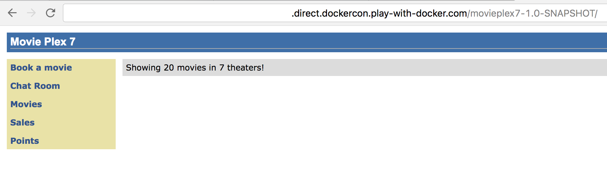
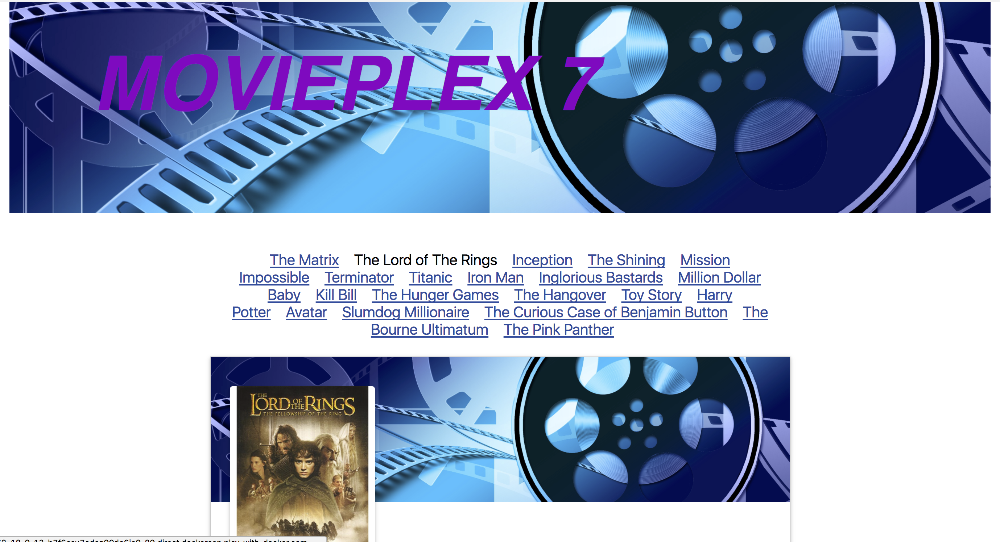

Modernizing Traditional Java Applications
In this Hands-on Lab, we will show you how to take a traditional Java EE app, and compile it to run in a lightweight Java container. The app we’ve chosen is an old Java EE demo called Movie Plex 7 that was originally written to run in Wildfly 3. You can find our fork of the repo in our javaee-demo repository on GitHub. In fact, if you were to take that repository, and lift the movieplex7-1.0-SNAPSHOT file, you could run that in a Java Application Server, such as WebLogic, Wildfly, or WebSphere.
If you aren’t yet familiar with the basic concepts of Docker, you may wish to start with the Docker 101 lab before running this lab.
Table of Contents
- Task 0: The Play with Docker Lab Environment
- Task 1: Building the App in a Container
- Task 2: Adding a New Front-end
- Task 3: Moving from Wildfly to Tomcat EE
Step 0: The Play with Docker Lab Environment
The terminal window on the right hand side of this web page is a Linux-based Docker host running in the Play with Docker (PWD) lab environment. This is where you will run all of the commands in this lab.
There are two ways of running commands in the terminal:
- Single-clicking any command will paste it into the terminal and execute it
- You can manually type each command into the terminal
Step 1: Building the App in a Container
In this section of the lab, you are going to take a Java EE web app running on Wildfly, move it to Tomcat EE, and run it in a Docker container.
The easiest way to move an enterprise Java app into Docker is create a WAR file and deploy it to the app server.
Clone the lab repo into the PWD lab. Remember, you can click the command or manually type it into the terminal window.
git clone https://github.com/dockersamples/javaee-demo
cd javaee-demo
You will build the application using Maven and deploy it to container to see how it looks. Building and deploying the application can be done without having either Maven or an application server on your computer.
First, look at how the original application works. You can do this by building the application in Docker using a Wildfly container which was the app server the project first used. Although the GitHub repo contains an EAR file, you will build the application from source and deploy it using a multi-stage build Dockerfile. Here’s the text of the two-stage Dockerfile.wildfly file that you can find in the movieplex7 directory.
FROM maven:3-jdk-7 AS app
WORKDIR /usr/src/movieplex7
COPY pom.xml .
RUN mvn -B -f pom.xml -s /usr/share/maven/ref/settings-docker.xml dependency:resolve
COPY . .
RUN mvn -B -s /usr/share/maven/ref/settings-docker.xml package -DskipTests
FROM jboss/wildfly
RUN /opt/jboss/wildfly/bin/add-user.sh admin Admin --silent
COPY --from=app /usr/src/movieplex7/target/movieplex7-1.0-SNAPSHOT.war .
EXPOSE 8080 9990
CMD ["/opt/jboss/wildfly/bin/standalone.sh", "-b", "0.0.0.0", "-bmanagement", "0.0.0.0"]
The first part of the Dockerfile uses a maven container to build the war file. Instead of building the application locally, it is built inside the container with the tool chain needed to compile the application. In the second part of the Dockerfile, you use a Wildfly container and copy the war file built in the previous container to the app server for deployment.
There are a few additional commands to expose the ports and start Wildfly.
Here’s how to build the app:
cd movieplex7
docker image build -t movieplex7 -f Dockerfile.wildfly .
This creates a Docker image with the application deployed on Wildfly.
To run the application:
docker container run -d -p 8080:8080 --name movieplex7 movieplex7

Your app is working just fine in Docker now, with no code changes and running in the original app server. Feel free to play around with the functionality of the site to understand the app better.
Step 2: Adding a New Front End
One of the big advantages of containers is that they can ease the process of updating older applications by replacing parts of the application as needed. Java EE also makes it easy to consume the output of your application in different ways. This allows you to easily add a different client to an application.
React Client
In this section, you will update the Movie Plex 7 application by adding more attributes to the movie entity and also updating the presentation layer by writing a new client using React. Don’t worry, all the code is provided, you don’t need to know React.
As you saw earlier, the JavaServer Faces client was rather sparse and old-fashioned looking. You want to make the movie listing to include movie posters as well as more information about each movie. To do that, you will add a few attributes to the Movie entity, and include a path to a movie poster, and more information about the cast and the movie rating.
The Movie Plex 7 application includes a REST interface for querying movies. This simplifies writing a new client because you can use the API and get data via REST. The javaScript client is a bit more descriptive than the original JavaServer Faces client.

To get a separation of the new client from the existing client and server, you will deploy the React client in a separate container.
To get ready, stop and remove the running container, and then change the directory from movieplex7 to the root of the project. Due to a quirk in how React is built, and the base url of the Play with Docker lab, before you build the React client you need to run a script to inject the host URL into the Dockerfile:
docker container stop movieplex7
docker container rm movieplex7
cd ..
more react-client/Dockerfile
FROM node:latest
ENV API_HOST=pwd10-0-16-3-8080.host4.labs.play-with-docker.com
WORKDIR /usr/src/react-client
COPY . .
RUN npm install
RUN npm run build
EXPOSE 3000
CMD ["npm", "run", "start"]
React uses Node.js to build a static site for the interface. The Dockerfile is much simpler than the one for the movieplex7 app. It uses a single-stage build, which passes the environment variable API_HOST to the builder. When it runs, it will start a simple Node server that serves the React pages, and exposes them on port 3000. We’ll deploy it in the next section.
Step 3: Moving from Wildfly to Tomcat EE
In Step 1, you compiled and deployed the Movie Plex 7 application from source by building it in a Maven container and then deploying it in a Wildfly container. The JavaServer Faces front-end was integrated into the the same application image.
In this step you will make three changes. First, as described in the previous step, you will use a React front-end deployed in a second container. Second, you will deploy the app in a Tomcat EE application server instead of Wildfly. Last, you will deploy both at the same time using a Docker Compose file.
The new front-end is described in the last section, so take a look at the new Dockerfile that deploys your app using the Tomcat Server.
more movieplex7/Dockerfile
FROM maven:latest AS app
WORKDIR /usr/src/movieplex7
COPY pom.xml .
RUN mvn -B -f pom.xml -s /usr/share/maven/ref/settings-docker.xml dependency:resolve
COPY . .
RUN mvn -B -s /usr/share/maven/ref/settings-docker.xml package -DskipTest
FROM tomee:8-jre-7.0.2-plume
# tomcat-users.xml sets up user accounts for the Tomcat manager GUI
# and script access for Maven deployments
WORKDIR /usr/local/tomee/
ADD tomcat/tomcat-users.xml conf/
ADD tomcat/web.xml conf/
# copy and deploy application
WORKDIR /usr/local/tomee/webapps/
COPY --from=app /usr/src/movieplex7/target/movieplex7-1.0-SNAPSHOT.war .
# start tomcat7
EXPOSE 8080
CMD ["catalina.sh", "run"]
You’ll see that the first stage is very similar to Dockerfile.wildfly. Only instead of using maven:3-jdk-7 as the base image, it uses maven:latest. There’s still no code change, you are still compiling the code into a WAR file. The second stage is a bit different, because it uses a different application server. But the end result is the same application running on both.
You now have two Dockerfiles, one to build the Java Movie Plex 7 application and another to build the React javaScript client. Running a build for each will result in two images. You can individually run each image with the appropriate flags, but a simpler and more consistent solution is to use Docker Compose to start both images as containers that are connected by a network defined in Docker. Another nice thing about Docker Compose is that you can also build the images without having to do a separate docker image build command for each image. This is the docker-compose.yml file in the project root:
version: "3.3"
services:
movieplex7:
build:
context: ./movieplex7
image: movieplex7-tomee
ports:
- "8080:8080"
networks:
- www
react-client:
build:
context: ./react-client
image: react-client
ports:
- "80:3000"
networks:
- www
networks:
www:
The Compose file defines each service and the ports that they are mapped to. Of note is the react-client, which maps the public port 80 to the private in-container port of 3000.
To run and build the images use:
docker-compose up --build -d
Once it’s completed building, which the first time can take awhile, we can check on the status of the containers:
docker container ls
CONTAINER ID IMAGE COMMAND CREATED STATUS PORTS NAMES
02c1ee2be5ff movieplex7-tomee "catalina.sh run" 26 minutes ago Up 26 minutes 0.0.0.0:8080->8080/tcp javaeedemo_movieplex7_1
2a65e6f08819 react-client "npm run start" 26 minutes ago Up 26 minutes 0.0.0.0:80->3000/tcp javaeedemo_react-client_1
This shows that the containers are running. Since there is overhead to start and deploy the war file you can look at the log files of the movieplex7 container to check if it’s started
docker logs javaeedemo_movieplex7_1
...
02-Oct-2017 21:01:22.069 INFO [main] sun.reflect.DelegatingMethodAccessorImpl.invoke Starting ProtocolHandler [http-nio-8080]
02-Oct-2017 21:01:22.084 INFO [main] sun.reflect.DelegatingMethodAccessorImpl.invoke Starting ProtocolHandler [ajp-nio-8009]
02-Oct-2017 21:01:22.088 INFO [main] sun.reflect.DelegatingMethodAccessorImpl.invoke Server startup in 15073 ms
Now that the application server has started, you can click here and try out the new interface.

And the old interface is still there, you can see it by clicking on here.
Survey
We’re grateful you’ve chosen to spend some time with us today. We’d appreciate the opportunity to hear from you about what you liked and what we might improve.
If you could please fill out this very short survey, it’d be greatly appreciated.
Thanks, the DockerCon Hands-on Labs team.